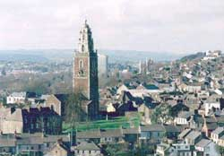

Since the 6th century there has been a Christian witness in this place. Before St. Finbarre, the patron saint of our city, established his College of Learning at Gillabbey Street in the 7th century, where now stands the magnificent Cathedral dedicated to his name, there has been a Church on this site.
If you would like to learn more, please go to the Historical Background section.
Daniel D Kelly is the Curator of St. Anne's Church, Shandon.
Daniel was born in this Parish and has a great knowledge
and a deep love for the Church of St. Anne Shandon.
Daniel is being used more and more by tour companies as either a walking guide or as an
after dinner speaker. Advance booking is advisable.

Church of St. Anne Shandon
Church Street
Cork City, Ireland
Send us an Email.
Tel: 353 21 4505906